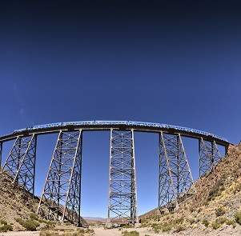
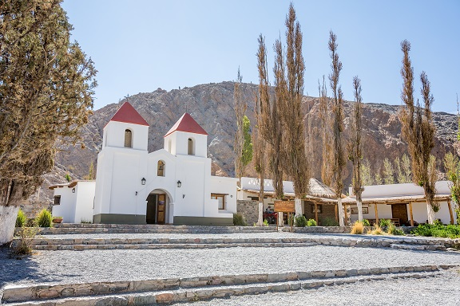
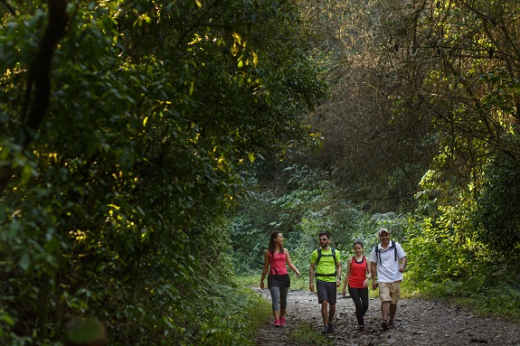
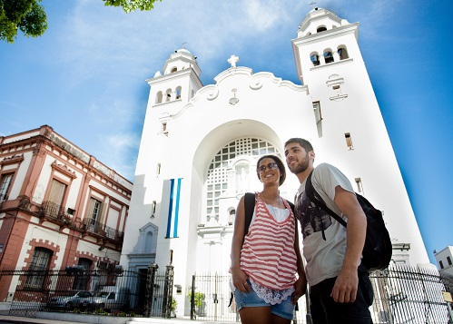
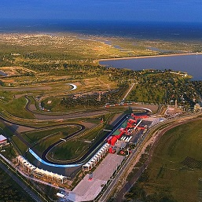
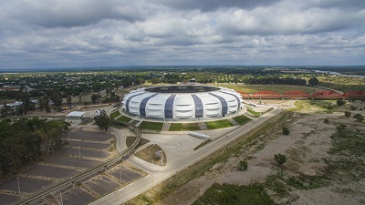
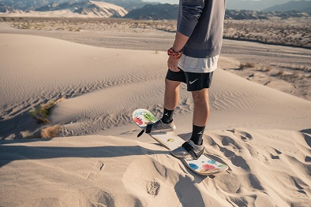
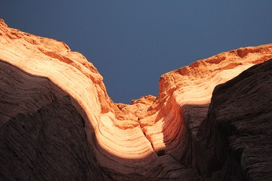
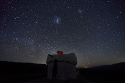

Tucumán

Santiago del Estero


Catamarca
La Rioja


San Juan

Tucumán
Santiago del Estero
Catamarca
La Rioja
San Juan


Emplazada en el nor-oeste argentino, la provincia de Jujuy cuenta con maravillosos paisajes y diversos climas que podrás aprovechar durante todo el año.
Paisajes, pueblos, sabores y colores se funden en un ambiente mágico y único. Si bien la región más conocida es la Quebrada de Humahuaca, con sus principales pueblos: Tilcara, Purmamarca y la Humahuaca, podemos encontrar otros destinos fascinantes, como son las Salinas Grandes.

Podrás llegar a este paraje de ensueño en 4x4 propia o bien, en excursión, que es lo recomendable, ya que el terreno cambia con rapidez y las crecidas de ríos pueden sorprender a los foráneos. Este salar, único en la puna argentina, se encuentra en la Ruta Provincial 52, luego de atravesar la Cuesta del Lipán, a más de 4.000 metros de altura.

Este maravilloso lugar, a tan solo 66km de Purmamarca, es casi desconocido, lo que permite mantener un ambiente pristino. Justamente este es el nombre del glamping que podemos encontrar en la zona: "Pristine Camps". ¿Que es esto? U alojamiento en domos en medio del salar, con todas las comodidades de un hotel 5 estrellas. ¿Te animás a pasar unos días allí?
Este emprendimiento cuenta con habitaciones para 2 o 3 personas y se puede reservar junto con actividades en las cercanías e incluye tours astronomicos nocturnos al salar. ¡De otro planeta!
Quedate tranquilo, que es un proyecto sostenible y ecológico con alto cuidado del medio ambiente y bajo impacto en la naturaleza. Además las comunidades locales se ven beneficiadas ya que los productos que utilizan son regionales y los empleados de la zona. Tambíen utilizan energía limpia 100% renovable, asiprando a una huella de carbono cero.
Sus dueños aseguran que "Pristine, fue creada bajo un modelo de economía circular, se prioriza la cultura, los recursos humanos, el paisaje prístino y el servicio de primera categoría aplicado a un concepto de excelencia de glamping" Excelente.
Si preferís los destinos clásicos, te recomendamos quedarte unas noches en Tilcara para vivir de cerca la quebrada, y aprovechar la buena ubicacion de esta localidad, totalmente preparada para recibir turistas.
Tilcara es conocida por su Pucará, fortificación pre-hispánica asi como por las famosa quebrada "Garganta del Diablo" y el Museo Arqueológico Dr. Eduardo Casanova.
A más de 2400 metros del altura, esta localidad se emplaza en la márgen derecha del Río Grande y se caracteriza por sus fiestas, reuniones, eventos y principalmente por el Carnaval. A tan solo 84 km de la capital, San Salavdor de Jujuy, podrás llegar en auto particular o en omnibus que circulan todo el año desde jujuy y Salta.
¿Te animás a hacer parapente sobre la quebreda?. Sumale a tu viaje la experiencia de volar y sentí el viento en la cara en un vuelo bautismo de 15 minutos con instructor y descubrí Jujuy desde el cielo.
Tocando el cielo con las manos: así podrás sentir este inigualable viaje en el Tren a las Nubes, viajar en el tiempo y conocer parte de una increíble historia durante su construcción.
Saliendo de la estación Salta capital, en micros de última generación con un recorrido de aproximadamente 16 horas entre ida y vuelta, rodeados de paisajes de película.
En la parada de San Antonio de los Cobres, donde podrás probar platos típicos, comprar artesanías, música, baile y alegría , souvenir regionales, ahora sí: a subir al icónico tren, para completar tu paseo por las nubes.
De ahí hasta el Viaducto La Polvorilla con cientos de vueltas en un aletargado tren, que va subiendo cuestas rodeadas de cardones que lo protegen, hasta llegar a una construcción impensada de realizar en un terreno agreste y de difícil acceso.
Sobre el Viaducto de la Polvorilla el tren detendrá su marcha para que tomes las mejores fotos desde los 4200 metros de altura. La nada misma debajo, las vías y la mágica sensación de haber llegado. Luego retrocede - ya no pasa a Bolivia - y en tierra firme te estarán esperando, después del vértigo, con la emoción del himno, rodeada de lugareños. Regresarás cansada, nuevamente en micro desde San Antonio de los Cobres, pero jamás podrás olvidar lo vivido.
Se recomienda sacar los pasajes con antelación dada la gran demanda nacional e internacional, no sale en época de lluvias generalmente durante el verano argentino. Ver días y horarios de salida.
Imperdibles de Salta: recorrido del vino hasta Cafayate, además de una excelente ruta paisajes de película, los mejores vinos en origen, para regalar y regalarse, imperdibles los tamales, chivito y empanadas de carne cortada a cuchillo, disfrutaras de una peña y podrás bailar que te lo recomendamos.
Salar de Cachi, a 160 kms de Salta capital y un aproximado de 3 hs de auto, llegarás al salar de cachi por un sinuoso camino por la Cuesta del Obispo. Se puede ir y venir en el día, parando para un almuerzo y paseo por el pueblo y los museos arqueológicos.
Con vuelos diarios desde Aeroparque, Ezeiza, Neuquen, Iguazú y Córdoba, es muy fácil llegar por vía aérea a la provincia. ¡Descubrila!
Para más info de ese destino, escribinos.
En Tucumán, pequeña provincia del norte argentino, y llamada el Jardín de la República, podrás hacer un recorrido religioso por las innumerables capillas e iglesias del siglo pasado. Empecemos por ir a Yerba Buena, cercano a la capital de la provincia. Allí el Cristo Bendicente de 28 mts de altura construido sobre el cerro San Javier, nos bendice con su mano derecha en alto.
Podrás en el mismo cerro San Javier, hacer senderismo, y en determinados lugares el parapente es el rey de las aventuras para los audaces, donde se realizan campeonatos internacionales por los vientos propicios de la zona. Otros deportes: golf, tenis o ciclismo de montaña.
Además, recorriendo el cerro encontrarás la selva de yungas, una frondosa selva que te envolverá con sus olores a laurel, cedro, sus variedades de colores y un descanso para el cuerpo y el alma.
Volviendo al centro de la capital , cerca de la Plaza Independencia, la Iglesia de la Merced, tiene el simbolismo de ser la protectora del ejército argentino y muy venerada por el General Manuel Belgrano. El 24 de septiembre de todos los años, se celebra a la virgen, por lo que miles de fieles y visitantes llenan las calles de Tucuman para participar de procesiones, rosquitas típicas locales, emoción y devoción religiosa.
Otros templos de recorrida son: Capilla Nuestra Señora de Lourdes, la Catedral Nuestra Señora de la Encarnación, la Iglesia de San Francisco y la Parroquia de San Roque, entre otras.
Si de gastronomía se trata, en Tucumán son clásicos los alfeñiques: caramelos duros de caña con un sabor irresistible, al igual que las tabletas o los alfajores de miel de caña.
Para los amantes de lo salado, el bollo de chicharrón es el indicado y no pueden faltar la empanadas tucumanas: el clásico argentino reversionado con carne de matambre cortado a cuchillo, cebolla de verdeo, cebolla, comino y huevo duro. ¡Glup!
Imperdibles de visitar en Tucuman: la Casa Histórica y su museo, el parque 9 de Julio y el Dique El Cadillal para hacer divertidos y magníficos paseos en kayak, veleros, o disfrutar de las playas y del silencio.
Los Valles Calchaquíes y Tafí del Valle, son otros de los destinos obligados con 3 dias de estadia en la provincia, senderos y vegetación durante el recorrido, caminos laberínticos, ademas podes hacer trekking, cabalgatas y mountain bike.
Para más info de ese destino, escribinos.
Santiago del Estero es la provincia que no está en los catálogos de agencias de viajes pero que no podes dejar de visitar porque te va a sorprender. Su clima oscila alrededor de los 22 grados centígrados con una temporada de lluvias entre octubre y mayo. Provincia de grandes deportes de competición. fútbol, automovilismo, motocross y sede de grandes premios internacionales.
El Autódromo Internacional de Santiago, a orillas del embalse de Río Hondo tiene numerosas pistas para motos y autos de todas las categorías; entrando aquí podrás consultar el calendario de importantísimos eventos, que atraen a turistas de todo el mundo y que la provincia espera con anhelo.
Para los amantes del deporte , se suma el Estadio Unico Madre de Ciudades, o Estadio Único, de reciente inauguración, data del año 2021 y fue nombrado el segundo mejor estadio del mundo por su tecnología en lo que a construcción e instalaciones respecta, resulta llamativa la envergadura del mismo dentro la provincia. Todo de última generación. Sin olvidar de recorrer el museo.
Las Termas de Río Hondo, de visita obligada para el relax y la salud, cercanas al Autódromo, poseen una privilegiada hotelería de gran nivel, cabañas y camping. Cuentan con un casino y gastronomía gourmet. Para todos los gustos, edades y precios.
El Río Dulce es sede de competencias de lanchas deportivas y de kitesurfing: te asesoramos para que tengas una excelente estancia. También podes acampar con vistas panorámicas a los tres puentes que unen la ciudad con La Banda.
Además del deporte, la naturaleza se hace presente en esta provincia norteña, reservas forestales, parques naturales, plazas, te llenan de aire puro el alma, mientras que, el canto de los pájaros te acompañarán durante el recorrido, sólo o en familia, con niños también es posible.
Un paseo por la ciudad es importante, porque se nota un gran contraste entre las grandes construcciones vidriadas que reflejan el cielo y las viejas casonas e iglesias que nos recuerdan un pasado interesante.
La conexión terrestre es la más importante en la provincia, ya que los vuelos que llegan a su capital sólo partes desde Aeroparque o Ezeiza.
Para más info de ese destino, escribinos.
Vamos a realizar un gran viaje a Las Juntas en Catamarca, con gran variedad de ofertas gastronómicas, de alojamiento y sobre todo de aventuras. La distancia, si te alojas en la capital San Fernando del Valle, es aproximadamente de 50 km por hermosos caminos con buen mantenimiento.
El paseo de pesca de truchas, trekking, safari fotográfico desde Las Juntas puede hacerse en un día, dormir y salir para Fiambalá, entre 4 a 5 horas desde la capital. El auto debe estar en buenas condiciones y con las provisiones necesarias; si no te animas a ir por caminos de grandes curvas, lo ideal es ir con algún lugareño o excursión para un mejor disfrute.
Las aguas termales de Fiambalá atrapan al visitante y la selva que la rodea es el marco perfecto para una gran foto mural. Turistas de todo el mundo llegan hasta ellas para tratar diferentes patologías. Camping y montañismo son a prueba de temerarios.
Otras opciones son el Volcán Incahuasi, el Museo del Hombre, las catedrales, la ciudad, los deportes y la aventura entre montañas y precipicios. El Dique Jumeal, con sus deportes acuáticos y pesca, te sorprenderá en la bella Catamarca.
Para terminar una buena jornada no debemos dejar de probar, quesillos de cabra, mermeladas de naranja caseras, cabrito asado, las tradicionales empanadas, picantes guisos, quinoa, olivos, nueces y el ”mote” con mucho maíz, todo acompañado con un excelente vino Malbec de la zona.
Belén, la cuna del poncho, es el publo más antiguo de Catamarca. Valles bodegas, monumentos históricos y antiguas iglesias, se entremezclan diseñando majestuoos paisajes.
La calidéz y hospitalidad de su gente es inigualable y te acompañará durante todo tu recorrido. Imperdible ir a la Reserva de la Biósfera Laguna Blanca, con flora y fauna autóctona e inigualable valor arqueológico e histórico.
Las dunas no solo estan cerca del mar, Catamarca es conocido por la Duna Mágica de Saujil, allí va gente de todas las edades para practicar sandboard en la aren:, es una maravillosa experiencia llegar allí, y sobre manera ver el atardecer entre los dorados y rojizos rayos del sol escondiéndose entre las dunas.
Ya estamos incursionando en la precordillera, donde la temperatura va cambiando durante el día y refrescando mucho durante la noche, incluso con algunas nevadas. Nos queda recorrer el campo de piedra pómez, un paisaje lunar que aparecerá delante de nuestros ojos. Ubicado a unos 60 km de Antofagasta, se recomienda ir con camioneta 4 x 4 o algún baqueano por seguridad.
Para más info de ese destino, escribinos.
Te invito a La Rioja, también llamada así por sus tierras de alto contenido en hierro. La mejor época es otoño o primavera, aunque todo el año tiene su encanto. El Parque Nacional Talampaya , declarado Patrimonio de la Humanidad, es un regalo a los ojos.
En el día se puede realizar una recorrida por Talampaya, con un guía en auto, o moto; provistos de alimentos y sobre todo agua. Las figuras en las rocas talladas por el desgaste eólico como el Monje, la Tortuga, el Tótem y el gran paredón surgido luego de movimientos internos del terreno, son mágicas y podrás jugar con el eco que provocan sus formas; es muy movilizador.
Sólo se puede acceder en los vehiculos autorizados por lo que podés optar entre la excursion al Cañón de Talampaya de 2:30 horas de duración en minibus, la excursion al Cañón del Talampaya y Los Balcones, de 4 horas de duración en minibus y de nivel medio de dificultad por lo que es apta para personas de 10 a 65 años o bien el Cañón de Talampaya con el Cañón de Shimpa de 4 horas de duración en 4x4. Para los que andan cortos de tiempo, la excursión Naturaleza y Cultura es la ideal, ya que dura sólo una hora.
Hay mucho más que eso para conocer, el Castillo de Dionisio o Sendero de los Morteros, es imperdible con toques de Dalí y Gaudi en medio de quebradas, ideal para hacer senderismo y trekking. A 120 km desde la capital hacia el norte, se realizan paseos nocturnos para la contemplación del límpido cielo y ver las estrellas.
Para conocer una provincia, la visita obligada es la capital, en este caso La Rioja: es muy rica en su cultura religiosa, con antiquísimas iglesias, la plaza principal, museos arqueológicos y los mercados artesanales con una importante mano de obra con lanas de ovejas y llamas, cuero, piedras y cestería.
Las fiestas nacionales al Patrono San Nicolás de Bari, se realizan en enero, pero también están La Chaya, la del Olivo, el Viñador, en diferentes épocas. Verificar el calendario provincial con antelación.
Mejor no perderte una noche entre instrumentos de viento, charango, y las mejores comidas típicas con los vinos de reconocida fama, las costillitas de cerdo a la riojana, papas bravas, mazmorra con leche y el infaltable membrillo. Ser feliz es viajar.
Para más info de ese destino, escribinos.
Sol, aventuras, paisajes, ciencia, buen vino, mates y las mejores rutas para elegir. A solo 90 km de San Juan capital, se encuentra El Barreal, pero por lo ascendente y cantidad de curvas hacia la precordillera son 300 km aprox. Lo distintivo del lugar: el carrovelismo, sobre una planicie donde en determinadas horas del día la velocidad del viento es aprovechada por los audaces, para subirse a máquinas de 3 ruedas, impulsadas por el viento, llegando hasta 135 km/h en una pista natural de 14 km de largo por 5 km de ancho. ¡Inigualable al atardecer!.
Ahora si: vamos a la aventura espacial del Centro Astronómico El Casleo: gestionado por la Universidad de Córdoba, de San Juan y de La Plata, junto al CONICET, es un centro astronómico único con más de 250 noches limpias por año.¿Sabías que varios países tienen en sus cercanías observatorios por la calidad del cielo?.
Las visitas diurnas son sin cita previa todos los dias de la semana a las 10:30, 11:30, 14:30, 15:30 y 16:30hs. Tienen una duración aproximada de 40 minutos y te permiten recorrer las instalaciones y ver de cerca el magnífico telescopio. ¡Apasionante!
También existe la opción de visitas nocturnas con reserva previa: podés quedarte a dormir y compartir con turistas de todo el mundo la experiencia de ver el movimiento de terrestre con interesantes historias educativas; fascinación para niños y grandes. ¡Siempre consulta si están habilitados los alojamientos previamente!
De la ciencia vamos al parque triásico del Valle de la Luna: Ischigualasto. Las geoformas esculpidas por el agua y el viento durante años nos hace descubrir al famoso Hongo, el Gusano, el Submarino, la cancha de Bochas que se asemeja a un paisaje lunar, entre otros, pudiendo inventar todas las formas a cada paso. Con buen tiempo y luna llena el paseo se vuelve aún más impactante.
En Valle de la Luna, antes de entrar al Parque Provincial, tenes audio guías para alquilar, ferias artesanales para adquirir recuerdos, un pequeño restaurante y baños públicos.
En San Juan capital, el Teatro del Bicentenario, de impactante acústica y novedosa arquitectura, sede de eventos nacionales e internacionales, música,teatro, lírica, ballet. Cuenta con acceso a personas con movilidad reducida. Rodeado de espacios verdes, una fuente de aguas danzantes, exposiciones de arte urbano y rural.
En la casa de Domingo Faustino Sarmiento, con la higuera que todos conocimos en los libros de historias, verás elementos de la vida de Sarmiento, el telar de su madre, y un gran patio con sillas en las que se leen las más bellas frases de importantes autores que hacen reflexionar a niños y adultos, de gran actualidad.
Para más info de ese destino, escribinos.